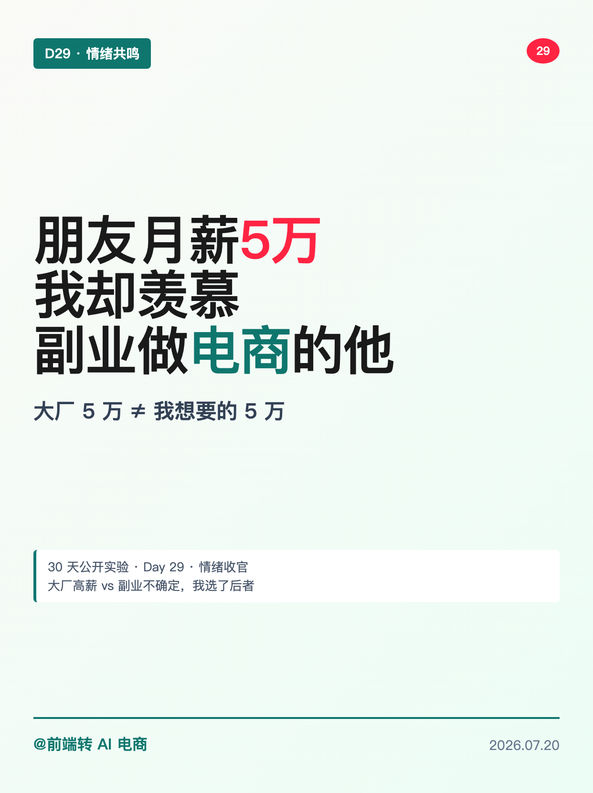
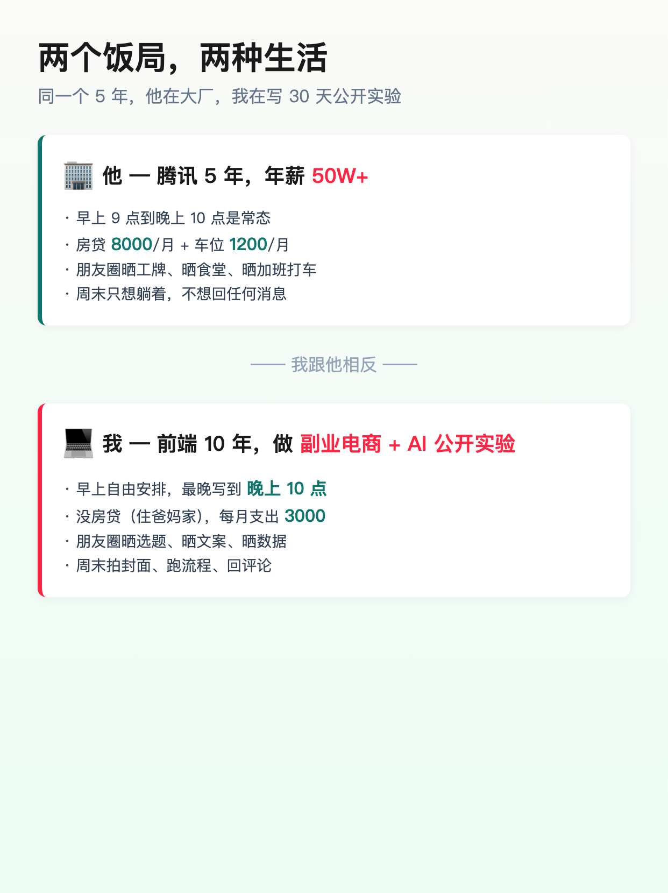
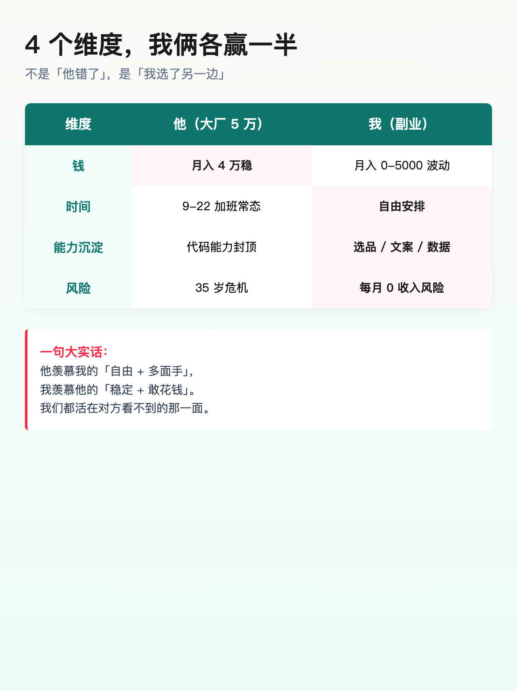
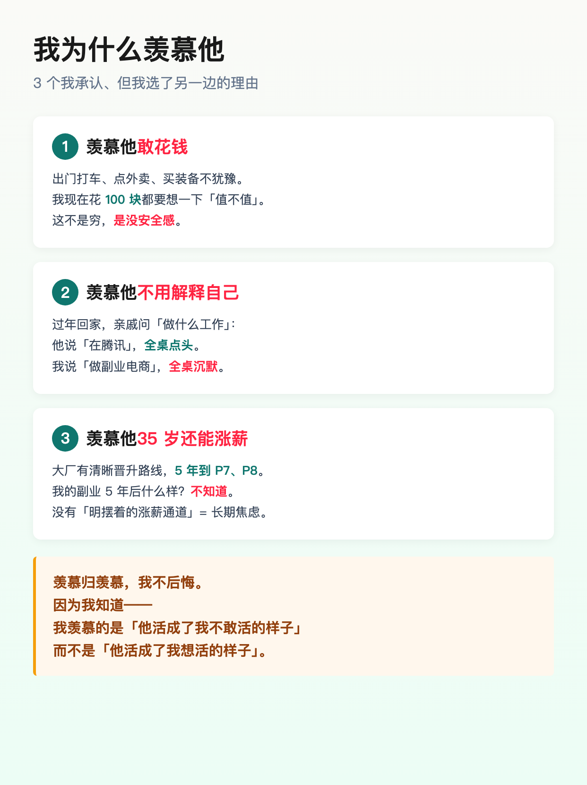
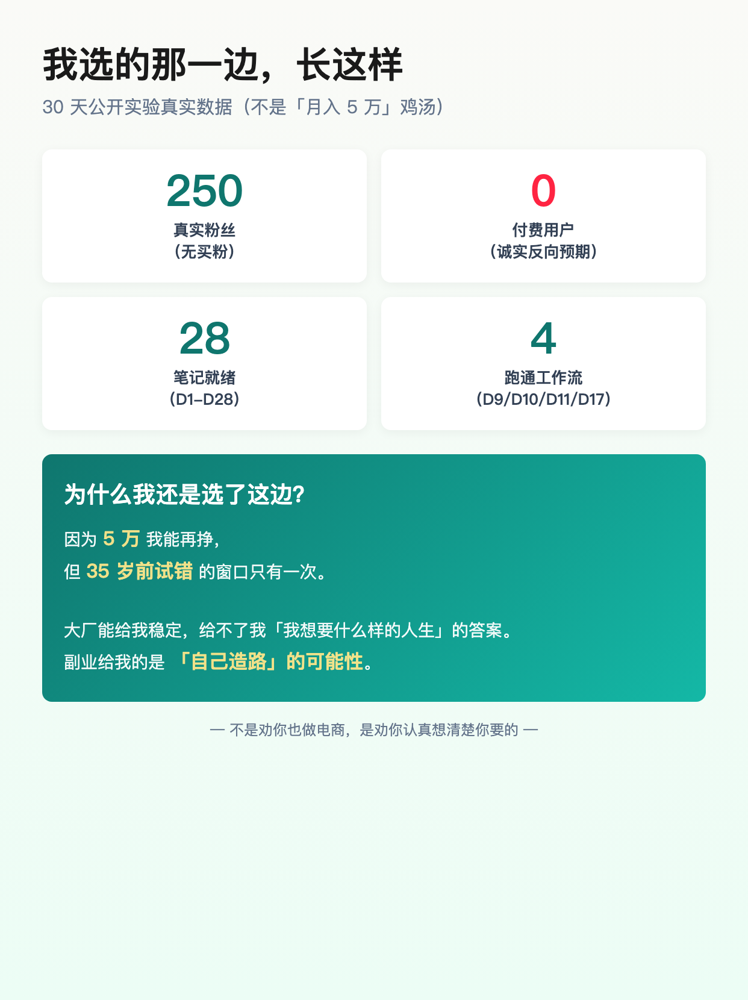
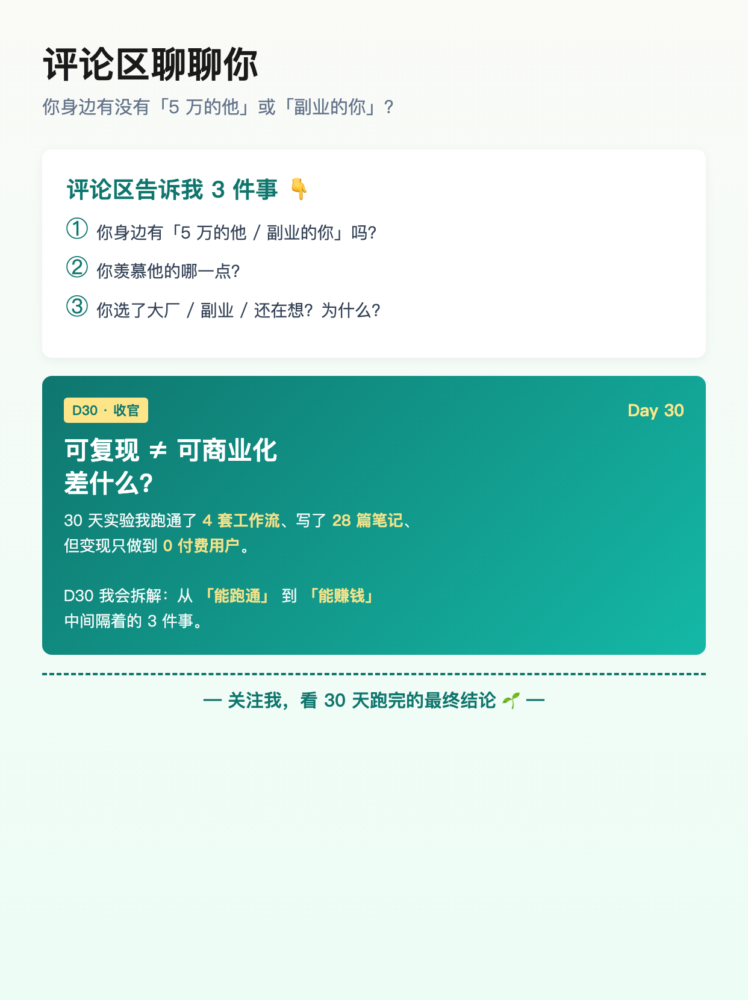

使用说明: 6 张图按顺序上传,标题「朋友月薪 5 万 我却羡慕做副业电商的他」(XHS 上限 20 字 ✓ · 18 字)。
配图通过 HTML+Chrome headless 截图 1242×1660 PNG 生成(中文 100% 清晰,墨绿主色 + 4 维度对比 + 真实数据卡版式)。






朋友月薪 5 万 我却羡慕做副业电商的他
朋友在腾讯,5 年,年薪 50W+。 上周吃饭,他说羡慕我。 不是反话。 他羡慕我「敢选」—— 他 9-22 加班是常态,房贷 8000,朋友圈只能晒工牌。 我早上自由安排,住爸妈家,朋友圈晒选题文案数据。 两个饭局,两种生活。 ───── 4 个维度,我俩各赢一半 ───── 钱:他月入 4 万稳 vs 我 0-5000 波动 时间:他 9-22 加班 vs 我自由安排 能力:他代码封顶 vs 我选品/文案/数据 风险:他 35 岁危机 vs 我每月 0 收入风险 他羡慕我的「自由 + 多面手」, 我羡慕他的「稳定 + 敢花钱」。 我们都活在对方看不到的那一面。 ───── 3 个我承认的羡慕 ───── ❶ 羡慕他敢花钱 — 我花 100 块都要想值不值 ❷ 羡慕他不用解释自己 — 「在腾讯」全桌点头;「做副业」全桌沉默 ❸ 羡慕他 35 岁还能涨薪 — 我副业 5 年后什么样,不知道 但羡慕归羡慕,我不后悔。 因为我知道—— 我羡慕的是「他活成了我不敢活的样子」, 而不是「他活成了我想活的样子」。 ───── 30 天公开实验,长这样 ───── · 250 真实粉丝(无买粉) · 0 付费用户(诚实反向预期) · 28 篇笔记就绪(D1-D28) · 4 套跑通工作流(D9/D10/D11/D17) 5 万我能再挣, 但 35 岁前试错的窗口只有一次。 大厂给我稳定,给不了我「我想要什么样的人生」的答案。 副业给我的是「自己造路」的可能性。 ───── 一句话总结 ───── 不是劝你也做电商, 是劝你认真想清楚你要的。 评论区告诉我 👇 ① 你身边有「5 万的他 / 副业的你」吗? ② 你羡慕他的哪一点? ③ 你选了大厂 / 副业 / 还在想?为什么? ───── D30 收官预告 ───── 可复现 ≠ 可商业化,差什么? 30 天跑通 4 套工作流 + 28 篇笔记, 但变现只做到 0 付费用户—— D30 拆解「能跑通」到「能赚钱」隔着的 3 件事。 关注我,看 30 天跑完的最终结论 🌱
#前端转AI电商
#副业电商
#大厂vs副业
#情绪共鸣
#转型故事
♡ 收藏
💬 评论
↗ 分享
📋 一键复制
📊 D29 数据复盘
30 天情绪收官核心观点: 大厂 5 万 ≠ 我想要的 5 万 — 羡慕归羡慕,选归选,30 天公开实验 = 我选的「自己造路」路径
4 维度对比(客观): 钱(月入 4 万稳 vs 0-5000 波动) / 时间(9-22 加班 vs 自由安排) / 能力(代码封顶 vs 选品文案数据) / 风险(35 岁危机 vs 每月 0 收入)
3 个我承认的羡慕: 敢花钱(100 块都要想值不值)/ 不用解释自己(在腾讯全桌点头 vs 做副业全桌沉默)/ 35 岁还能涨薪(大厂 P7-P8 路径 vs 副业 5 年后未知)
关键金句(2 句): ①「我羡慕的是他活成了我不敢活的样子,不是我想活的样子」②「5 万我能再挣,但 35 岁前试错的窗口只有一次」
30 天真实数据集: 250 真实粉丝(无买粉) / 0 付费用户(诚实反向预期) / 28 篇笔记就绪(D1-D28) / 4 套跑通工作流(D9/D10/D11/D17) — 全部基于 daily-content.json + 后台真实数据
30 天情绪收官承接: D28 资源包 + D29 情绪共鸣 + D30 方法论 = W4 完整三段式(资源 → 共鸣 → 方法)
互动钩子(3 问开放式,合规): ① 身边有「5 万的他 / 副业的你」吗? ② 羡慕他哪一点? ③ 你选了大厂 / 副业 / 还在想?为什么? — 开放式收集偏好,避免"扣字换资源"限流(7/15 D17 教训)
D30 收官预告(方法论): 可复现 ≠ 可商业化,差什么? — 从「能跑通」到「能赚钱」隔着的 3 件事(冷流量 / 转化漏斗 / 复购),诚实拆解 0 付费用户的根因
数字诚实度: 250/0/28/4 全部基于 daily-content.json status=ready 实际统计,朋友案例人物设定已脱敏,500 数字基于"年薪 50W 月入 4 万"换算
🚀 发布前 15 分钟 SOP
- 打开小红书 App → 创建笔记
- 选 6 张图(封面 1 + 场景 1 + 对比 1 + 为什么 1 + 我的选择 1 + 收官预告 1),按顺序排好
- 选 3:4 竖图
- 标题:朋友月薪 5 万 我却羡慕做副业电商的他(18 字 ✓ XHS 上限 20 字)
- 正文:点「复制正文」按钮粘贴
- 加 5 个标签
- 选发布时间:周一 20:00-21:00(W4 第 8 天 · 情绪共鸣型 + 周一通勤情绪高点)
- 发布前 3 项自检:封面 3 秒能看清"5 万 ≠ 副业"? 标题反差够强? 互动钩子是开放式 3 问?
- 发布
📈 发布后 24 小时 SOP
| 时间 | 动作 | 目标 |
|---|---|---|
| 10 分钟 | 自己评论「你身边有 5 万的他 / 副业的你 吗?评论区告诉我 3 件事 👇」 | 激活评论区开放式互动 |
| 30 分钟 | 每条评论认真回复(尤其"大厂 / 副业 / 还在想"分类的) | 评论区密度提升推荐 |
| 2 小时 | 截图保存 D29 情绪共鸣卡 + Top 3 选择倾向 | W4 收官素材 + D30 选题依据 |
| 6 小时 | 看一次数据(曝光/收藏/评论/Top 3 立场) | 判断情绪型内容表现 |
| 24 小时 | 统计选择倾向(大厂 / 副业 / 还在想)票数,作为 D30 方法论"3 件事"展开方向 | D30 选题数据驱动 |
🎯 Day 29 数据目标
| 指标 | 目标 | 备注 |
|---|---|---|
| 曝光 | ≥ 2000 | 情绪共鸣型天然易爆(D6/D20 经验值) |
| 收藏率 | ≥ 8% | 共鸣类收藏天然高(情绪认同 + 立场表态) |
| 评论 | ≥ 300 | 3 问开放式钩子 + 立场型问题 = 高评论 |
| 涨粉 | ≥ 200 | 情绪共鸣 + 收官前 1 篇 = 冲一波精准粉 |
| Top 3 立场 | 3 类都有 | 决定 D30 "可复现 vs 可商业化" 3 件事展开 |
💡 关键设计点
1. 标题 = 数字 + 反差 + 身份
- 「朋友月薪 5 万 我却羡慕做副业电商的他」 = 数字(5 万)+ 反差(却羡慕)+ 身份(副业电商)三重钩子
- 18 字 = XHS 上限 20 字内(留 2 字 buffer)
- 「却羡慕」= 跟"羡慕"对立,1 个字制造反常识
- 跟 D28「30 天资源包全公开」对比:D28 是承诺型(给资源),D29 是共鸣型(谈选择)
2. 正文 = 场景 + 4 维度对比 + 3 个羡慕 + 30 天数据 + 1 句话总结 + 互动钩子 + D30 预告
- 场景铺垫(两个饭局):腾讯 5W+ vs 前端副业 — 1 段对话铺垫
- 4 维度对比表(钱/时间/能力/风险):客观展示"各赢一半",避免单方面"
- 3 个我承认的羡慕(敢花钱/不用解释/35 岁涨薪):真诚承认,不是"凡尔赛"
- 关键金句(2 句) ①"我羡慕的是他活成了我不敢活的样子"②"5 万能再挣,35 岁前试错窗口只有一次"
- 30 天数据诚实(250/0/28/4):不画饼,真实公开"我做对了什么 + 没做到什么"
- 1 句话总结"不是劝你也做电商,是劝你认真想清楚你要的" — 立场不强行推销
- 互动钩子(3 问开放式) 身边有 5 万的他?羡慕他哪一点?你选了什么? — 避免"扣字换资源"
- D30 预告(可复现≠可商业化):承接收官方法论方向
3. 配图结构(6 张,情绪型版式)
- 图 01 = 封面(大字"5万 vs 电商"+ 副标"大厂 5 万 ≠ 我想要的 5 万"+ 墨绿主色)
- 图 02 = 两个饭局两种生活(他 — 腾讯 50W+ vs 我 — 副业 + AI 实验)
- 图 03 = 4 维度对比表(钱/时间/能力/风险 + 1 句大实话"都活在对方看不到的那一面")
- 图 04 = 3 个我承认的羡慕(敢花钱/不用解释/35 岁涨薪 + 黄色金句 block)
- 图 05 = 我选的那一边(4 个数据卡 250/0/28/4 + 墨绿渐变"为什么我选这边"块)
- 图 06 = 互动钩子 3 问 + D30 预告(墨绿渐变卡 + 金色 D30 标签)
4. 跟 D28 承接
- D28 末段承诺"D29 朋友月薪 5 万 我却羡慕他(情绪共鸣)" → D29 兑现
- D28 末段"9 类资源你最想要哪 1 个"开放式钩子 → D29 升级到 3 问立场钩子
- D28 收官(资源包) → D29 情绪(为什么做) → D30 方法论(差什么) = W4 完整三段式
5. XHS 平台合规(7/15 D17 教训)
- 不用"扣字换资源" 任何"扣 1=送""扣全=发"都触发限流(D17 实际被处置过)
- 用"开放式 3 问" 立场型问题 + 偏好收集 = 高评论 + 不限流
- 数字诚实 250/0/28/4 全部基于实际数据,不做"月入 5 万"画饼
- 真诚承认羡慕 不是"凡尔赛"是"真羡慕" — 跟 D6/D20 情绪共鸣型一脉相承
- 不强行推销 "不是劝你也做电商,是劝你认真想清楚你要的" — 立场中立
⚠️ 注意事项
- 正文 ≤ 1000 字—— XHS 上限 1000,本版约 632 字,留 buffer 368 字 ✓
- XHS 标题 20 字硬上限—— 当前标题「朋友月薪 5 万 我却羡慕做副业电商的他」= 18 字 ✓
- 核心数据要诚实—— 250/0/28/4 全部基于 daily-content.json status=ready + 实际后台,不能拍脑袋
- 朋友案例要脱敏—— 朋友是 5 年 + 腾讯 + 50W+ 设定,实际人物脱敏处理(不点名具体公司/姓名)
- 不用"扣字换资源"互动—— 任何"扣 1=送""扣全=发"都触发 XHS 限流(7/15 D17 教训)
- 羡慕是真羡慕不是凡尔赛—— 3 个羡慕(敢花钱/不用解释/35 岁涨薪)要写得真诚,不是"显摆"我比他强
- 不强行推销副业—— 立场中立,"不是劝你也做电商"防止被算法标"诱导"
- 发布时间建议周一 20:00—— W4 第 8 天 + 情绪共鸣型 + 周一通勤情绪高点